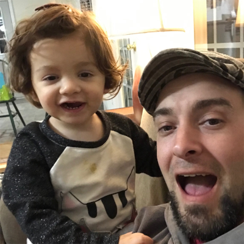

About Me
 "I knew a Buddhist once. I didn't care for him. Too upity about his serenity." Eugene Halpin has consistently been praised and condemned for his ability to speak truth to power. His complete ineptitude in navigating the political minefiled that is today's professional climate has doomed him to wander the working world, searching for an oasis of the principled (without nuance) and productive (without machination). Eugene is his best self when he is creating something.
On July 6th, 1995 - my fourteenth year - I undertook a right of passage and applied for a work permit. It was a proud day for my family. Never mind that I had my frist job at 12. On that day I learned that my family praises something other than hard work; compliance with the law.
Eugene attended SUNY Potsdam and, after enduring many hard lessons, earned a degree in physics. He then went on to achieve a MS in physics from Virginia Tech (go Hokies. Suck it, UVA). Despite his crippling anti-socail behavior and introversion, he returned to Virgina Tech after graduation, joining the instructional team as an adjunct professor and later taking on the additional responsibilites of lab coordinator. During his time at VT Eugene began devloping his programming skills, teaching himself Java and basic HTML and CSS. His duties as Lab Coordinator included maintaining a website. Early on Eugene began writing JS scripts to better manage the forms and page content.
Eugene left his post at Virginia Tech, moving to Saint Paul with his wife. She's a rock star (that's just an expression. She's an engineer. A damned good one.) Since that time he's been on the search. He wore a few different hats and there are some gaps in his resume. But he created many things, learned many things, and became a professional educator (high school, middle school, and later at the University level again), collaborator, mentor, and coach. For all of the joy that teaching brought him, Eugene struggled with the political atmosphere and the resistance to change.
On May 25th, 2018 - in the third year of our marriage and the second year of our daughter's life - we chose to leave Saint Paul. Opportunity for my wife and the promise of a new begining for me - that's what we followed to Raleigh.
Eugene's talents lay in problem solving, communication, and technical writing. Syntactically, he's on point. Planning, weather a project in his woodshop, a weekly menu and shopping list, or the logistics of a family trip, comes naturally. His math and physics education and his tendency to derive over memorize make for a well ordered and patient individual with the curiosity and wonderment of a child. Self-betterment is a constant process for Eugene, running in the background.
At present, Eugene is a stay-at-home dad. He maintains the family home and cares for his daughter during the day. In the evenings, after meals and chores and family time, he codes.